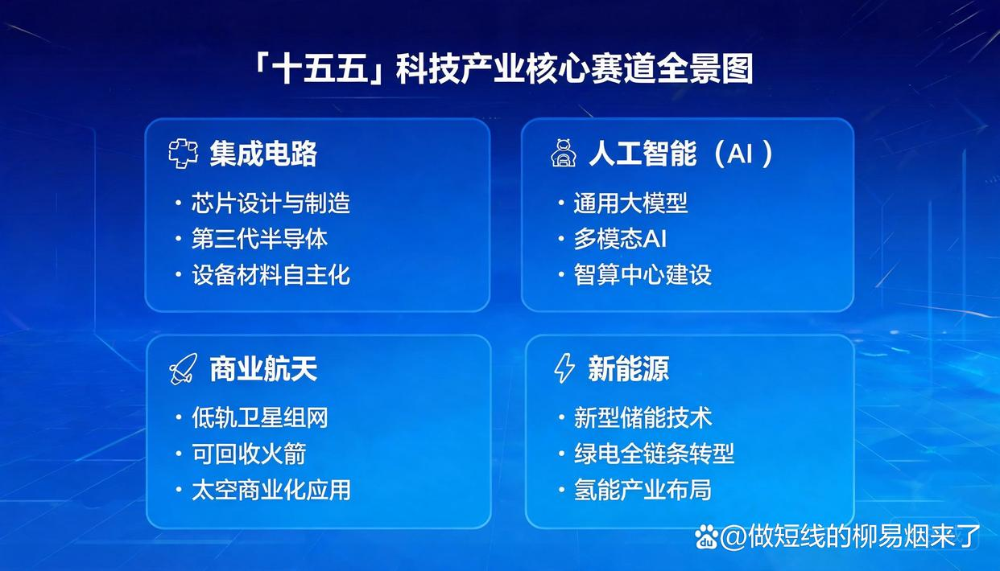
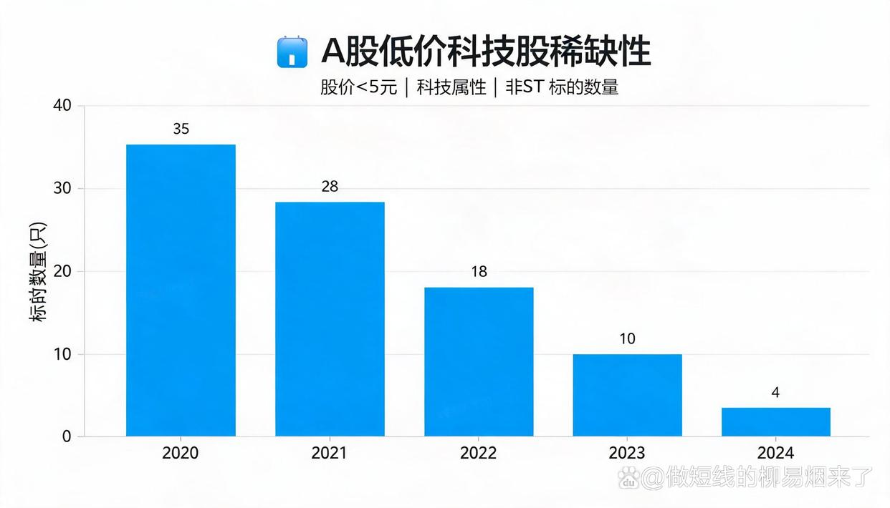
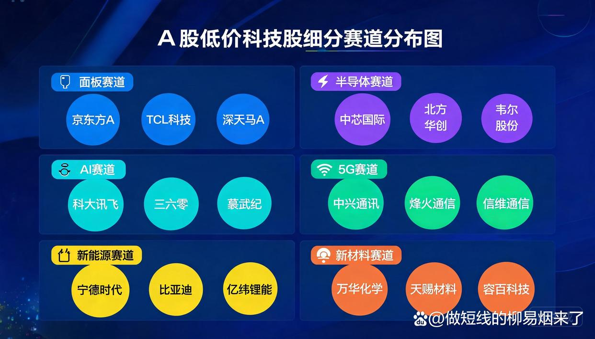

中际旭创370元、寒武纪市值5000亿——你每次看到这些科技龙头，是不是都有一种"买得起就好了"的感觉？
问题是，2026年的科技行情还没结束。高价龙头买不起，市场上还有没有能上车的位置？
答案是有。全A股中，同时满足"股价低于5元、纯正科技属性、非ST"三个条件的标的，目前只剩17只左右。本文把这17只标的的赛道逻辑和基本面逐一梳理清楚。
> 郑重说明：本文仅供行业逻辑研究，不构成任何投资建议。
012026年科技板块的宏观变局
2026年，是十五五规划的开局之年。
这一年与以往最大的不同在于——科技被确立为贯穿全年的最强主线，而且是国家战略层面的最强主线。
3月发布的《十五五规划纲要》将半导体产业置于十大新产业新赛道榜首，集成电路、人工智能、具身智能、量子科技被明确为国家战略性布局的未来产业主攻方向。从补短板到筑高地，中国科技产业正在经历一次根本性的战略升维。
回顾2025年，A股交出了一份亮眼的成绩单：沪指全年上涨18.41%，深证成指涨幅达29.87%，创业板指暴涨49.57%，科创50涨35.92%。科技股是这轮结构性牛市当之无愧的核心引擎——从年初DeepSeek引爆AI行情，到光模块、存储芯片轮番领涨，科技板块几乎承包了全年的市场焦点。
但进入2026年，市场的底层逻辑正在发生变化。
多家头部机构在年初策略报告中指出，2026年A股从估值驱动转向盈利驱动，慢牛取代快牛成为市场共识。科技板块随之进入龙头集中+基本面驱动的结构分化阶段。
头部的光模块、算力芯片龙头股价持续创新高，但估值已处于历史高位区间；而大量中腰部科技股，尤其是一些具备核心技术但市值偏小的标的，仍处于被市场忽视的状态。
高价科技股已充分定价。市场的下一个定价权，正在向低价、低估、真科技方向扩散。
02科技板块政策红利全景
要理解2026年科技板块的投资逻辑，首先必须读懂政策面的底层驱动。
十五五规划建议明确提出，要在AI、半导体、量子计算、生物技术及航天技术等关键核心技术领域取得突破。2026年政府工作报告进一步将打造智能经济新形态列为年度重点工作，"人工智能+"连续第三年被写入政府工作报告。
半导体方面，政策从补短板转向锻长板。
AI算力产业链这边，高景气已经被业绩数据摆到桌面上了。
2026年Q1，三星电子合并营收达133.87万亿韩元（约合6160亿元人民币），同比增长69.16%，营业利润同比暴增超过750%。国内AI链同样业绩井喷：台积电Q1净利润181亿美元，同比增长58.8%；中际旭创Q1营收194.96亿元，同比增长192%，净利润57亿元，同比大增262%。这些数字背后，是AI算力硬件需求的集中爆发。
新兴赛道方面，十五五规划将量子科技、生物制造、氢能和核聚变能、脑机接口、具身智能、第六代移动通信六大领域列为未来产业主攻方向。广东省4月底发布的十五五规划纲要更明确提出支持规划建设商业航天产业园区。
2025年新能源汽车年产量已超过1600万辆，工业机器人产量增长28%，集成电路产量增长10.9%——这些是科技产业向上的底盘数据。

03行业周期逻辑：科技板块从低迷到价值回归
政策面的天时之外，产业周期才是决定科技股走向的根本力量。
2022-2024年，科技制造产业链经历了长达2~3年的去库存周期（产能过剩导致产品价格暴跌、企业利润大面积承压的阶段）。以面板行业为代表，LCD面板价格一度跌破现金成本，龙头企业的毛利率被压至历史低位。
但周期的残酷之处在于，它同时也在淘汰落后产能、提升行业集中度。
到2026年，多个细分领域已确认或正在确认周期拐点。
面板行业率先发出筑底信号。经历2025年的深度调整后，全球LCD产能出清基本收官。京东方2025年报显示，营收同比小幅上涨3.1%至2045.9亿元，面板价格在2025年下半年企稳。进入2026年，体育赛事等终端需求催化下，TV面板价格出现上行信号。
更值得关注的是OLED赛道——Omdia预计2026年OLED平板面板出货量将同比增长39%达到1500万片，京东方第8.6代AMOLED生产线计划于2026年下半年正式量产。
半导体封测和存储芯片这块，正处于新一轮景气上行周期的加速阶段。AI服务器对HBM（高带宽存储）和高速DRAM的需求爆发式增长，导致DDR4和DDR5等消费级内存供应紧张。
德勤数据显示，存储芯片价格在2025年9月至11月上涨约4倍，2026年上半年价格预计进一步上涨。封测（芯片封装与测试）龙头通富微电等企业产能利用率持续提升，先进封装成为新的业绩增长极。
消费电子方面，AI手机、AI PC、智能穿戴正在推动新一轮换机周期。工业自动化和智能制造受益于制造业升级与政策双轮驱动——十五五规划明确提出加快制造业数字化转型。新材料和电子材料领域，铜基新材料、轻量化材料受益于新能源和电子产业扩张，市场空间持续扩大。
2026年Q1国内半导体设备企业营收利润普遍大增，国产替代进程显著加速，一家典型的设备企业订单增速超过50%，验证了设备环节的景气度。
04低价科技股的稀缺性逻辑
经过2025年科技股的结构性暴涨后，大量正宗科技股已经涨到了散户够不着的价位。
中际旭创股价在370元以上、寒武纪市值突破5000亿、一批光模块和算力龙头股价早已站上百元大关。高价科技股的上车门槛对普通投资者越来越不友好。
与此同时，在市场的另一极，有一批科技股因为各种原因——或处于周期底部、或遭遇短期业绩阵痛、或市值偏小被主流资金忽视——股价长期徘徊在个位数区间。
根据2026年4月的最新数据统计，全A股市场中，同时满足股价低于5元、具备纯正科技属性、剔除ST风险警示三个条件的标的，仅剩17只左右。这是极其稀缺的物种。
低价不等于劣质。仔细审视这17只标的可以发现，它们有三个共同特征：
一是大多处于细分赛道的周期底部或业务转型关键期，基本面正在边际改善而非恶化；
二是主营业务聚焦在OLED面板、半导体封测、工业自动化、AIoT、5G通信、新能源材料等国家战略扶持方向；
三是股价在2-5元区间，兼具一定的弹性空间和相对的安全边际。
需要特别指出的是，低于2元的仙股需要严格排除——这类标的往往存在严重的经营困境或财务隐患，风险收益比极不对称。真正值得研究的，是2-5元区间中那些主业清晰、赛道正确、拐点可期的标的。

05细分赛道深度分析与标的梳理
以下按赛道分类，对截至2026年4月股价低于5元的正宗科技股进行梳理。需郑重说明：以下仅为行业逻辑梳理与基本面分析，不构成任何投资建议。
面板/显示赛道：周期底部+国产替代红利
面板行业是典型的强周期行业，而2026年正站在周期反转的关键节点。
和辉光电（688538，约2.28元） 是国内最早实现AMOLED量产的厂商之一，拥有第4.5代和第6代两条AMOLED生产线，刚性AMOLED产能位居中国第一、全球第二。2025年公司业绩虽仍亏损（预计净利润约-19.69亿元），但亏损幅度同比收窄约5.49亿元。更关键的是，公司已于2026年3月通过港交所聆讯，拟实现A+H上市，这个时间节点本身就是一个信号。随着国产OLED产能持续扩张和面板价格回暖，价值修复空间不小。
合力泰（002217，约2.68元） 主营触控显示模组和消费电子精密结构件，处于典型的行业底部反转逻辑中。
冠捷科技（000727，约2.72元） 是全球显示器制造龙头，产能规模位居世界前列，受益于AI PC换机周期，估值修复空间较大。
星星科技（300256，约3.51元） 聚焦盖板玻璃、VR/AR结构件及消费电子外观件，业务与消费电子和元宇宙赛道高度相关。
半导体/芯片赛道：存储产业链高景气传导
盈新发展（000609，约2.86元） 聚焦存储芯片和半导体封测（芯片封装与测试）。AI驱动下，存储芯片价格自2025年下半年以来持续走高，DRAM与NAND闪存涨幅显著，公司作为存储产业链上的重要一环，有望持续受益于行业景气度的提升。
AI/智能制造赛道：双主线驱动
东方智造（002175，约2.57元） 主营智能数控系统和工业自动化设备，处于工业母机+智能制造双主线赛道。2025年公司经历了业务调整和业绩阵痛，但2026年Q1营收已出现企稳增长信号。数控系统是工业母机的大脑，在制造业数字化升级的大趋势下战略价值毋庸置疑。
达实智能（002421，约2.87元） 聚焦AIoT（人工智能物联网）、数据中心和智慧城市解决方案，直接受益于算力基建和数字中国战略。随着各地数据中心建设加速推进，公司在建筑智能化和节能领域的业务具有持续增长动力。
5G/通信赛道：从5G到5G-A/6G的演进红利
春兴精工（002547，约3.44元） 主营5G射频器件和精密结构件。随着全球5G网络覆盖深化和5G-A/6G技术演进启动，射频前端和基站结构件的需求将持续增长。
新能源/新材料赛道：产业扩张下的材料受益链
鑫科材料（600255，约3.65元） 是国内铜基新材料龙头，产品广泛应用于电子元器件、连接器和半导体引线框架。电子产业的扩张周期直接拉动了铜基新材料的需求，在这一细分赛道竞争壁垒较强。
中利集团（002309，约3.98元） 业务覆盖光伏组件、储能系统和特种线缆。光伏行业在经历2024-2025年产能出清后，行业集中度持续提升，龙头企业盈利修复值得关注。
曙光股份（600303，约3.04元） 聚焦新能源汽车零部件和氢能源产业链，十五五规划将氢能列为未来产业主攻方向之一，多地氢能产业政策正在加速落地。
康欣新材（600076，约3.51元） 主营轻量化新材料，受益于新能源汽车和航空航天的减重需求。
AI应用/消费科技赛道
汤姆猫（300459，约4.13元） 在AI应用加速落地的2026年，凭借会说话的汤姆猫IP和AI交互技术，是A股AI应用端少有的纯正标的。
精密制造赛道：消费电子与汽车电子的交叉受益
胜利精密（002426，约3.76元） 主营消费电子结构件和精密模具，随着AI手机、AI PC换机周期启动，结构件供应商有望迎来量价齐升。
山子高科（600927，约4.05元） 聚焦汽车智能装备和电控底盘，受益于智能网联汽车渗透率持续提升。

06风险提示与投资框架
低价科技股绝不等于无风险。
这类标的之所以低价，往往有其内在原因——或处于亏损状态、或负债水平较高、或业务处于转型阵痛期。投资低价科技股，需要建立清晰的分析框架和严格的风险纪律。
审视标的时，有几个维度绕不开。
营收增速是否转正。 营收是利润之母。如果一家公司的营收持续萎缩，再低的价格也谈不上价值。反之，营收企稳回升是基本面改善的最早信号。
毛利率是否触底反弹。 对于周期底部的公司，毛利率的边际改善往往先于净利润转正，这是最早能捕捉到的信号。
研发投入占比。 真正有科技含量的公司，即使在业绩低谷期也会保持相当的研发强度，这是区分真科技与伪科技的关键标尺。
行业景气周期位置。 低价科技股最大的投资逻辑是周期反转，因此需要结合行业库存水平、产品价格趋势、下游需求变化等综合判断。
仓位管理上，低价科技股波动性通常大于蓝筹股，更适合采用底仓+波段操作的策略，不宜重仓单票。止损纪律上，对于股价长期低于2元且基本面无改善迹象的标的应坚决排除，这类标的往往存在退市或其他重大风险。
> 再次强调：本文仅作行业逻辑梳理与基本面分析，不构成任何投资建议。 股市有风险，投资需谨慎。每个人的风险承受能力、持仓周期和投资目标各不相同，请基于自身情况做出独立判断。
2026年5月—布局窗口正在打开
5月，是A股传统的Sell in May窗口期。但这个魔咒在2026年或许并不适用。
回顾今年以来的走势，科创50指数3月曾创下年内新低，跌幅达10%以上，市场一度弥漫着对科技股的悲观情绪。但进入4月，伴随Q1业绩的密集披露，AI算力硬件方向集体爆发，科创50指数强势反弹，4月累计涨幅超过25%。市场用真金白银再次确认了科技主线的地位。
5月的市场面临两个核心变量：一是年报和一季报的收尾影响正在消退，业绩雷的风险大幅降低；二是经过4月下旬的整固调整，部分错杀或尚未被充分定价的标的，正在形成新的布局窗口。
在十五五科技强国的大背景下，科技板块的投资机会不是结束，而是刚刚进入新的阶段。当高价龙头已充分反映预期，市场的下一轮定价权，大概率会向那些被忽视的、处于价值洼地的低价正宗科技股转移。
真正的机会，往往不会主动找上门来。
你觉得这17只里，哪个赛道的机会最大？评论区聊一聊。#A股市场动向分析#
> _本文部分图片来源于网络，版权归原作者所有，如有疑问请联系删除。_ > > _风险提示：本文内容仅供行业研究与逻辑探讨，所述标的仅作案例分析之用，不构成任何形式的投资建议，投资有风险，入市需谨慎。_
免责声明
本文仅为个人研究与观点分享,基于公开资料整理,不构成任何投资建议。文中涉及个股仅作研究示例,不代表推荐。股市有风险,入市需谨慎。